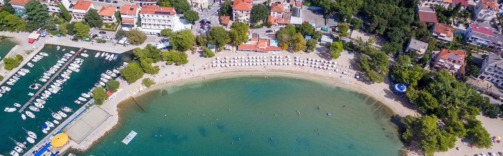
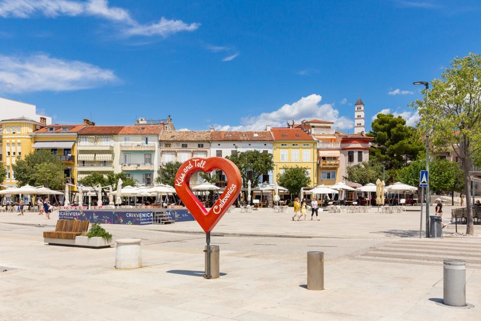

Što se nalazi u blizini?
Apartman se nalazi u Crikvenici, a u njegovoj blizini dostupni su brojni sadržaji koji mogu učiniti vaš boravak ugodnijim i praktičnijim.
More i plaže

Jedna od glavnih prednosti boravka u Crikvenici je blizina mora. Gosti mogu uživati u kupanju, sunčanju i opuštanju uz obalu.
Plaže su pogodne za odmor tijekom cijelog dana, a šetnja uz more pruža ugodan način za početak ili završetak dana.
Centar grada

U blizini apartmana nalazi se centar Crikvenice gdje možete pronaći različite trgovine, restorane, kafiće i druge sadržaje.
Centar je posebno zanimljiv tijekom turističke sezone kada grad nudi različite događaje i aktivnosti za posjetitelje.
Restorani, kafići i trgovine
Restorani i kafići
U okolici apartmana nalazi se više restorana i kafića. Gosti mogu uživati u različitim jelima, piću i opuštenoj atmosferi uz more.
Trgovine
U blizini se nalaze trgovine u kojima je moguće nabaviti namirnice i ostale osnovne potrepštine potrebne tijekom boravka.
Šetnice i aktivnosti
Šetnja uz more
Šetnice uz obalu odlične su za opuštene šetnje i uživanje u pogledu na more. Posebno su ugodne u jutarnjim i večernjim satima.
Aktivnosti
Okolica Crikvenice nudi različite mogućnosti za provođenje slobodnog vremena, od kupanja i šetnje do istraživanja grada i okolice.
Okolica apartmana
Na karti možete pogledati područje Crikvenice i lakše planirati obilazak sadržaja koji se nalaze u okolici apartmana.